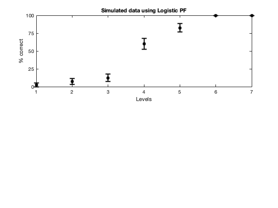
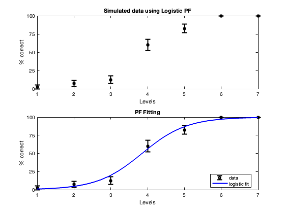
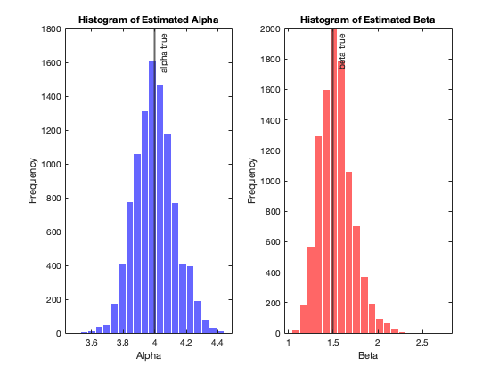
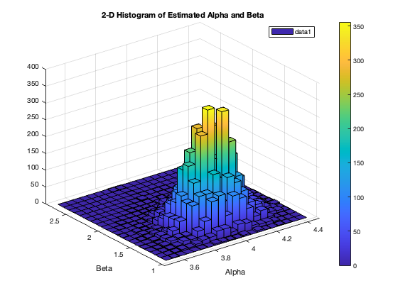
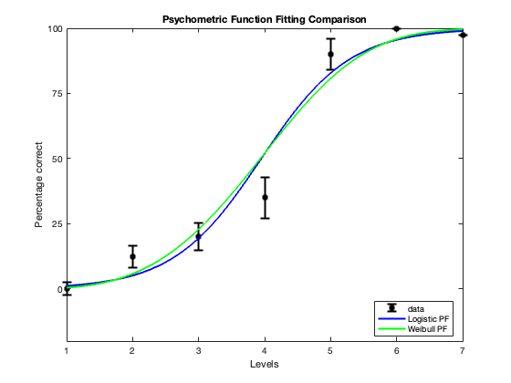

Contents
clear; close all; clc;
Q1.
Here I have simulated data for an observer performing a 2AFC method of constant stimuli task. This task has 7 levels with 4 being the level at which the subject performs by chance. The simulated data has been created using a logistic psychometric function (PF).
alpha = 4; beta = 1.5; levels = 7; x = 1:1:levels; n_trials = 40; rand_values = rand(levels, n_trials); prob_x = (1 ./ (1 + exp(-beta * (x - alpha)))); ans_choice = rand_values < prob_x'; y = mean(ans_choice, 2); yerr = std(ans_choice, [], 2)./sqrt(n_trials); figure(); subplot(2, 1, 1) errorbar(x,y*100,yerr*100,"vertical","ks", 'MarkerSize', 5, 'LineWidth', 2) ylabel('% correct') xlabel('Levels') xticks(x) yticks(0:25:100) title('Simulated data using Logistic PF')
Q2.
Here the simulated data is fit using logistic PF by minimizng the negative log-likelihood.
psychometric_function = @(params, x) (1 ./ (1 + exp(-params(2) * (x - params(1))))); neg_log_likelihood = @(params) -sum(y' .* log(psychometric_function(params, x)) + (1 - y') .* log(1 - psychometric_function(params, x))); initial_params = [1, 1]; fitted_params = fminsearch(neg_log_likelihood, initial_params); % Extract the fitted parameters alpha_fit = fitted_params(1); beta_fit = fitted_params(2); fprintf('Fitted Parameters:\n'); fprintf('Alpha: %f\n', alpha_fit); fprintf('Beta: %f\n', beta_fit); % Plot the original data and the fitted psychometric function x_values = 1:0.01:levels; y_fit = psychometric_function(fitted_params, x_values); subplot(2, 1, 2) errorbar(x,y*100,yerr*100,"vertical","ks", 'MarkerSize', 5, 'LineWidth', 2, 'DisplayName', 'data'); hold on; plot(x_values, y_fit * 100, 'b-', 'LineWidth', 2, 'DisplayName', 'logistic fit'); xlabel('Levels'); xticks(x) yticks(0:25:100) ylabel('% correct'); legend('Location', 'Best'); title('PF Fitting');
Fitted Parameters: Alpha: 3.849148 Beta: 1.639007
Q3.
I have repeated the simulations above using Monte-Carlo method. The distribution of estimated alpha and beta parameters are plotted alongside the actual alpha and beta parameters used to simulate the data. Number of Monte Carlo simulations
num_simulations = 10000; estimated_params = zeros(num_simulations, 2); for i = 1:num_simulations % Simulated data rand_values = rand(levels, n_trials); prob_x = 1 ./ (1 + exp(-beta * (x - alpha))); ans_choice = rand_values < prob_x'; y = mean(ans_choice, 2); % Fitting the psychometric function psychometric_function = @(params, x) (1 ./ (1 + exp(-params(2) * (x - params(1))))); neg_log_likelihood = @(params) -sum(y' .* log(psychometric_function(params, x)) + (1 - y') .* log(1 - psychometric_function(params, x))); initial_params = [1, 1]; fitted_params = fminsearch(neg_log_likelihood, initial_params); estimated_params(i, :) = fitted_params(1:2); end % Plot a histogram of the estimated parameters (alpha and beta) figure(); subplot(1, 2, 1); histogram(estimated_params(:, 1), 20, 'FaceColor', 'b', 'EdgeColor', 'w'); hold on; xline(alpha,'-',{'alpha true'}, 'LineWidth', 2); xlabel('Alpha'); ylabel('Frequency'); title('Histogram of Estimated Alpha'); subplot(1, 2, 2); histogram(estimated_params(:, 2), 20, 'FaceColor', 'r', 'EdgeColor', 'w'); hold on; xline(beta,'-',{'beta true'}, 'LineWidth', 2); xlabel('Beta'); ylabel('Frequency'); title('Histogram of Estimated Beta'); figure(); hist3(estimated_params, [20, 20], 'CDataMode', 'auto', 'FaceColor', 'interp'); xlabel('Alpha'); ylabel('Beta'); title('2-D Histogram of Estimated Alpha and Beta'); colorbar; legend('Location', 'Best'); 
Q4.
Here I repeated the data simulation and model fitting using logistic PF. This was followed by fitting the data using Weibull PF. Simulated data
rand_values = rand(levels, n_trials); prob_x = 1 ./ (1 + exp(-beta * (x - alpha))); ans_choice = rand_values < prob_x'; y = mean(ans_choice, 2); % Log PF logistic_function = @(params, x) (1 ./ (1 + exp(-params(2) * (x - params(1))))); logistic_neg_log_likelihood = @(params) -sum(y' .* log(logistic_function(params, x)) + (1 - y') .* log(1 - logistic_function(params, x))); % Weibull PF weibull_function = @(params, x) (1 - exp(-(x./params(1)).^params(2))); weibull_neg_log_likelihood = @(params) -sum(y' .* log(weibull_function(params, x)) + (1 - y') .* log(1 - weibull_function(params, x))); % Parameter estimates initial_params = [1, 1, 1]; logistic_fitted_params = fminsearch(logistic_neg_log_likelihood, initial_params); weibull_fitted_params = fminsearch(weibull_neg_log_likelihood, initial_params); x_values = 1:0.01:levels; logistic_fit = logistic_function(logistic_fitted_params, x_values); weibull_fit = weibull_function(weibull_fitted_params, x_values); % Plot the original data, the logistic fit, and the Weibull fit figure; errorbar(x,y*100,yerr*100,"vertical","ks", 'MarkerSize', 5, 'LineWidth', 2, 'DisplayName', 'data'); hold on; plot(x_values, logistic_fit * 100, 'b-', 'LineWidth', 2, 'DisplayName', 'Logistic PF'); plot(x_values, weibull_fit * 100, 'g-', 'LineWidth', 2, 'DisplayName', 'Weibull PF'); xticks(x) yticks(0:25:100) xlabel('Levels'); ylabel('Percentage correct'); legend('Location', 'Best'); title('Psychometric Function Fitting Comparison');